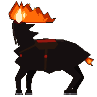
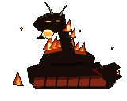
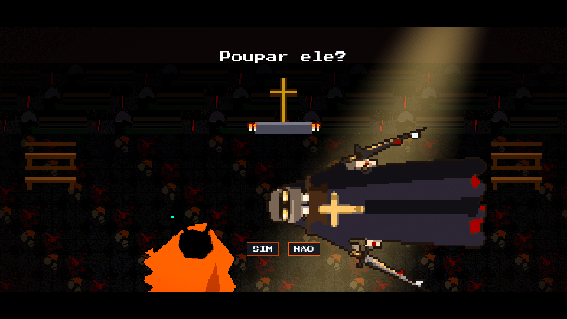

Égua negra amaldiçoada. O pescoço termina num toco cru de onde jorra uma coluna de fogo que serve de cabeça. As ferraduras de ferro reluzem a cada passada — e o arreio ainda pinga da última cavalgada.
A guardiã da mata acordou. E a floresta cobra em sangue. Rogue-like de horror folclórico que roda direto no navegador — sem baixar nada.
Entre trilhas tortas, rios escuros e capelas abandonadas, os pactos antigos entre humanos, bichos, mortos e encantados se romperam. Caçadores, padres, bruxos e feras corrompidas patrulham o que um dia foi sagrado. A Caipora despertou. E ela não veio para salvar ninguém.
Cinco pactos quebrados. Cinco pesadelos que não conhecem perdão.

Égua negra amaldiçoada. O pescoço termina num toco cru de onde jorra uma coluna de fogo que serve de cabeça. As ferraduras de ferro reluzem a cada passada — e o arreio ainda pinga da última cavalgada.

A cobra de fogo que vaga pelas queimadas. Seu rastro não ilumina: queima. Cada curva do corpo é uma trilha de cinzas, e quem olhar direto para a luz não enxerga mais nada.

Parente da Caipora. Protetor mais velho da mata, indiferente e letal. Os pés virados para trás deixam pegadas no sentido errado — e quando ele se agacha, a indiferença quebra.

Criança de fuligem, brasa e redemoinho. A carapuça vermelha corta o ar como uma faca. O cachimbo cospe fumaça suja. Não é fofo: é o menor dos chefes, e o mais rápido.

O invasor final. Baionetas consagradas em cada punho, cruz de ouro no peito e papéis de oração marcados a sangue. Ele "converteu" a floresta inteira uma vez. Agora é a vez da Caipora.
Caçadores, bruxos e criaturas corrompidas rondam a mata. Humanos que quebraram os pactos e pagaram com a própria humanidade. Abaixo do chapéu, só fendas vermelhas. Sob o capuz, só brasa mortiça.

Aperte Espaço no frame exato. Acerte o crítico. Esquive perfeito e contra-ataque. Cada erro custa sangue. Cada acerto, uma chance de sobreviver à mata.
Os dois instantes que selam o destino da mata — capturados direto do jogo.
No último golpe, o tempo racha. A garra negra da Caipora atravessa o peito do invasor, agarra o coração e aperta até drenar — em câmera lenta, quadro a quadro. A mata cobra com as próprias mãos.

O catequizador tomba sob o vitral da própria igreja. Ele ainda respira. A floresta inteira aguarda a sua resposta: a misericórdia que custa a vida da Caipora, ou o fim que faz a mata seguir respirando. A decisão é só sua.


Jogue no navegador. Sem instalação. Sem perdão.